|
|||||||||||||||||||||||||||||||||||||||||||||||||||||||||||||
|
|
ZXM-MoonSound
ZXM-MoonSound
- звуковая карта предназначена для воспроизведения на компьютерах с шиной ZX BUS/Nemo Bus сложных музыкальных произведений,
использующих частотную модуляцию (FM) и табличный волновой синтез. Карта построена на основе микросхемы YMF278 (OPL4), которая может
оперировать до 18 каналами двухоператорного FM-синтезатора и воспроизводить до 24 каналов 12- или 16-разрядного цифрового звука.
Данная карта является репликой звуковой карты Wozblaster для компьютеров серии MSX, которую
в конце 2012 года представил аргентинский фан Gustavo Iriarte (Ciro). В 2013 году ее немного доработал Евгений Брычков для того чтобы она
она помещалась в стандартный корпус картриджей фирмы Konami. Стоит также отметить, что Wozblaster в
свою очередь был постоен на основе карты Moonsound которую разработал инженер-электронщик Henrik Gilvad и которая
в 1995 году была представлена на Тилбургской компьютерной выставке в 1995 году.
Так в 2015 году, после показа на форуме http://zx.pk.ru/
музыкальных возможностей карты Wozblaster, которые скажем сильно впечатлили, подумалось, а почему бы не попробовать адаптировать ее
на наш родной ZX Spectrum. Предварительный анализ показал, что скоприовать один к одному не получится из-за некоторых
специфических различий двух платформ. Поэтому вместо микросхемы программируемой логики (PAL) GAL16V8, которая была в оригинале решено применить
более функциональную микросхему программируемой логики (CPLD) EPM7032STC44.Тем самым нивилировать конструктивные различия. Кроме того чисто из
эстетических соображений в первую очередь, чтобы все микросхемы были поверхностного монтажа, решено было заменить микросхему
27С160 на AM29F016. Правда для программирования последней необходим кабель, который в свою очередь позволит запрограммировать ее непосредственно
на плате звуковой карты. Сам кабель распаивается согласно имеющегося в наличии программатора, который умеет программировать AM29F016.
Кроме того на карту добавлен небольшой микшер для подключения внешних звуковых устройств. Что из этого в итоге получилось можно увидеть ниже на фото. Всего было выпущено 24 экземпляра плат данной звуковой карты. В 2016 году Виталий Михальков (MV1971) организовал производство партии плат ревизии 01.
В этой ревизии были изменены RCA разъемы, добавились крепежные отверстия под монтажную планку и вместо некоторых выводных электролитических конденсаторов появились
их SMD аналоги. Кроме того был проведен эксперимент по избавлению первоночального щелчка в аудиотракте, были добавлены три новых элемента (две микросхемы DD7, DD8 и
один резистор R39). Но увы, эскперимент оказался неудачным, а посему эти три элемента ставить не надо. На приведенном ниже фото
эти элементы установлены - не снимать же их теперь. Также был убран разъем для программирования флеш-ПЗУ. Теперь ПЗУ программируется
непосредственно на самой плате через микросхему YMF278. Платы этой ревизии имеют красный цвет защитной маски.
OPL4 На микросхеме YMF278 ОЗУ 1024 Кб
Основана на использовании модулей памяти статической памяти (SRAM). Предназначена для загрузки пользовательских семплов ПЗУ 2048 Кб. Предназаначена для хранения фиксированных семплов по стандарту General MIDI Выход Line OUT 3,5 разъем типа Jack, 2 RCA (тюльпаны) и четырехконтактный разъем для выхода стерео звука.
Особенности схемотехники Применение CPLD серии EPM7032STC44 для упрощения реализации схемы.
Конструктив Слотовая, расчитана под шину ZX Bus/Nemo Bus. Примечание: платы имеют 62 контактный слотовый разъем,
а не 60 контактный, характерный для шин ZX Bus/Nemo Bus.
1. Схема электрическая принципиальная в формате PCAD2002
- скачать
1. Прошивка микросхемы DD3 (AM29F016D) - скачать Здесь представлены программы, использующие ресурсы звуковой карты.
На данный момент в поддержку звуковой карты, представлен следующий софт: Демо программа Moonsound. Это первая программа музыкальная открытка написанная в поддержку данной звуковой карты.
Она позволяет оценить потрясающие звуковые возможности звуковой микросхемы YMF278. Программа включает
в себя четыре мелодии, написанные Naruto для компьютера MSX. Переключение мелодий происходит
по клавишам A,B,C,D. В остальном все как обычно, тоесть простенько и со вкусом. Автор: Mick Музыка: Naruto Год выпуска:
2015 Исходные коды:
скачать Файл для платформы ZX
Spectrum: скачать 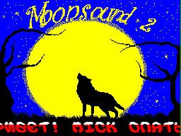 Демо программа Moonsound 2. Еще одна музыкальная открытка, написанная в поддержку данной звуковой карты.
На сей раз музыка, написанная в редакторе MoonBlaster (платформа MSX), специально для микросхемы YMF278.
Программа включает в себя шесть мелодий с расширением MWM. Переключение мелодий происходит
по клавишам A,B,C,D,E,F. В остальном все как обычно, тоесть простенько и со вкусом. Автор: Mick Год выпуска:
2015 Исходные коды:
скачать Файл для платформы ZX
Spectrum: скачать 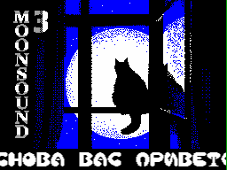 Демо программа Moonsound 3. Очередная музыкальная открытка, написанная в поддержку данной звуковой карты.
На сей раз музыка, написанная в редакторе MoonBlaster (платформа MSX), специально для микросхемы YMF278.
Программа включает в себя шесть мелодий с расширением MWM. Переключение мелодий происходит
по клавишам A,B,C,D,E,F. Также стоит отметить, что картинку для открытки предоставил Andrew_curds, за что
большущее человеческое спасибо. В остальном все как обычно, тоесть простенько и со вкусом. Автор: Mick Автор картинки: Andrew_curds Год выпуска:
2015 Исходные коды:
скачать Файл для платформы ZX
Spectrum: скачать 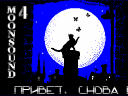 Демо программа Moonsound 4. Продолжаем лепить музыкальные открытки в поддержку данной звуковой карты.
Еще шесть мелодий мелодий с расширением MWM, написанных в редакторе MoonBlaster (платформа MSX), специально для микросхемы YMF278.
Переключение мелодий происходит по клавишам A,B,C,D,E,F. И в этот раз картинку для открытки предоставил Andrew_curds, за что
большущее человеческое спасибо. Автор: Mick Автор картинки: Andrew_curds Год выпуска:
2015 Исходные коды:
скачать Файл для платформы ZX
Spectrum: скачать 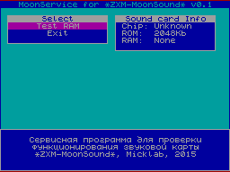 Сервисная программа MoonService v0.1 Небольшая сервисная программа для первоначальной проверки функционирования карты ZXM-MoonSound.
Набор функций практически никакой, только небольшой тест микросхем ОЗУ, которые предназначены для хранения любительских
наборов музыкальных инструментов. В принципе этого на первое время вполне хватит.
В дальнейшим возможно появятся и другие функции. Автор: Mick Год выпуска:
2015 Исходные коды:
скачать Файл для платформы ZX
Spectrum: скачать 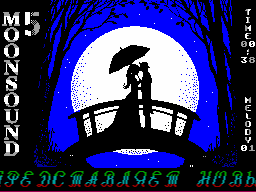 Демо программа Moonsound 5. Спустя полгода или больше разародился новым музыкальным сборником в поддержку данной звуковой карты.
В сборнике 14 мелодий с расширением MWM, в основном лирического содержания, написанных в редакторе MoonBlaster (платформа MSX),
специально для микросхемы YMF278. Все звучащие мелодии написаны музыкантом Qix, за что ему огромный респект.
Переключение мелодий проиходит по клавише Space. И в этот раз картинку для открытки предоставил Andrew_curds, за что
большущее человеческое спасибо. Автор: Mick Автор картинки: Andrew_curds Автор музыки: Qix Год выпуска:
2016 Исходные коды:
скачать Файл для платформы ZX
Spectrum: скачать 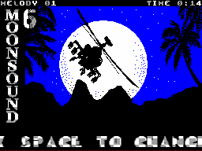 Демо программа Moonsound 6. Еще один новый музыкальный сборник в поддержку данной звуковой карты.
В сборнике 12 мелодий с расширением MWM, написанных в редакторе MoonBlaster (платформа MSX),
специально для микросхемы YMF278. Переключение мелодий происходит по клавише Space. Автор: Mick Год выпуска:
2016 Исходные коды:
скачать Файл для платформы ZX
Spectrum: скачать 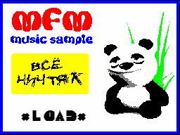 Демо программа MFM Music sample. Небольшая музыкальная открытка в поддержку данной звуковой карты.
В сборнике две мелодии с расширением MFM, написанных в редакторе MoonBlaster (платформа MSX),
специально для микросхемы YMF278. Переключение мелодий происходит по клавише Space. Автор: Mick Год выпуска:
2016 Исходные коды:
скачать Файл для платформы ZX
Spectrum: скачать 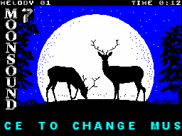 Демо программа Moonsound 7. Очередной новый музыкальный сборник в поддержку данной звуковой карты.
В сборнике 18 мелодий с расширением MWM, написанных в редакторе MoonBlaster (платформа MSX),
специально для микросхемы YMF278. Переключение мелодий происходит по клавише Space. Автор: Mick Год выпуска:
2016 Исходные коды:
скачать Файл для платформы ZX
Spectrum: скачать 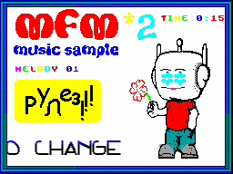 Демо программа MFM Music sample 2. Из небольшой музыкальной открытки в прошлом выпуске на сей раз программа
переросла в настоящий сборник с 15 мелодиями. И все это в поддержку данной звуковой карты.
В сборнике все мелодии с расширением MFM, написанных в редакторе MoonBlaster (платформа MSX),
специально для микросхемы YMF278. Переключение мелодий происходит по клавише Space. Автор: Mick Год выпуска:
2016 Исходные коды:
скачать Файл для платформы ZX
Spectrum: скачать 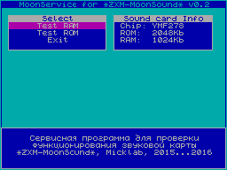 Сервисная программа MoonService v0.2 Следующая версия сервисной программы для проверки функционирования карты ZXM-MoonSound.
К существующему тесту микросхем ОЗУ добавился тест ПЗУ, который предназначен для проверки целостности
хранящейся информации. В процессе теста производится подсчет контрольной суммы по блокам размером 16кб и сравнению
с эталонной контрольной суммой. В дальнейшим возможно появятся и другие функции. Автор: Mick Год выпуска:
2016 Исходные коды:
скачать Файл для платформы ZX
Spectrum: скачать 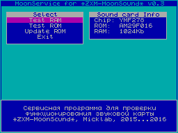 Сервисная программа MoonService v0.3 Новая версия сервисной программы для проверки функционирования карты ZXM-MoonSound.
В новой версии добавлена возможность обновлении прошивки флеш ПЗУ. Важное замечание, для правильной работы новой функции
необходимо, чтобы в компьютере был интерфейс SD карты по стандарту Z-Сontroller. Иначе обновить прошивку вы не сможете. Автор: Mick Год выпуска:
2016 Исходные коды:
скачать Файл для платформы ZX
Spectrum: скачать 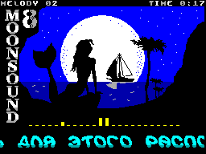 Демо программа Moonsound 8. Очередной новый музыкальный сборник в поддержку данной звуковой карты.
В сборнике 13 мелодий с расширением MWM, написанных в редакторе MoonBlaster (платформа MSX),
специально для микросхемы YMF278. Переключение мелодий происходит по клавише Space. Автор: Mick Год выпуска:
2016 Исходные коды:
скачать Файл для платформы ZX
Spectrum: скачать 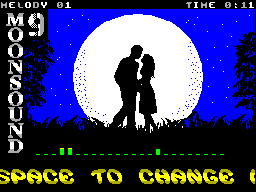 Демо программа Moonsound 9. Очередной новый музыкальный сборник в поддержку данной звуковой карты.
В сборнике 19 мелодий с расширением MWM, написанных в редакторе MoonBlaster (платформа MSX),
специально для микросхемы YMF278. Переключение мелодий происходит по клавише Space. Автор: Mick Год выпуска:
2016 Исходные коды:
скачать Файл для платформы ZX
Spectrum: скачать 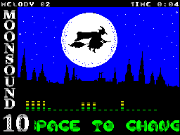 Демо программа Moonsound 10. Новый музыкальный сборник в поддержку данной звуковой карты.
В сборнике 12 мелодий с расширением MWM, написанных в редакторе MoonBlaster (платформа MSX),
специально для микросхемы YMF278. Переключение мелодий происходит по клавише Space. Автор: Mick Год выпуска:
2016 Исходные коды:
скачать Файл для платформы ZX
Spectrum: скачать 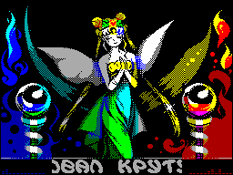 Демо программа Moon Music 1. Новый музыкальный сборник в поддержку данной звуковой карты.
В сборнике 12 мелодий с расширением MWM, написанных в редакторе MoonBlaster (платформа MSX),
специально для микросхемы YMF278. Переключение мелодий проиходит по клавише Space.
Кроме того стоит отметить что музыка в этом сборнике 60Гц, так что на некоторых реалах возможно и не пойдет.
На этот случай прикладывается эмуляторный (Unreal) вариант сборника. Автор: Mick Автор картинки: r0bat Автор музыки: Bart Roymans Год выпуска:
2016 Исходные коды:
скачать Файл для платформы ZX
Spectrum: скачать Файл для эмулятора Unreal:
скачать 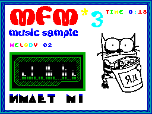 Демо программа MFM Music sample 3. Продолжаем выпускать сборники. В новом сборнике 13 мелодий
с расширением MFM, написанных в редакторе MoonBlaster (платформа MSX), специально для микросхемы YMF278.
Кроме того в сборнике присутствует анимация, для которой необходим компьютер с памятью больше 128Кб и
использующий 7 бит порта 7FFDh. Переключение мелодий происходит по клавише Space или автоматически по окончанию
мелодии. Автор: Mick Год выпуска:
2016 Исходные коды:
скачать Файл для платформы ZX
Spectrum: скачать 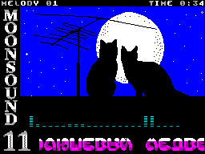 Демо программа Moonsound 11. Новый музыкальный сборник в поддержку данной звуковой карты.
В сборнике 30 коротеньких мелодий с расширением MWM, написанных в редакторе MoonBlaster (платформа MSX),
специально для микросхемы YMF278. Переключение мелодий происходит по клавише Space. Автор: Mick Год выпуска:
2016 Исходные коды:
скачать Файл для платформы ZX
Spectrum: скачать 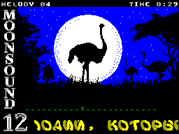 Демо программа Moonsound 12. Новый музыкальный сборник в поддержку данной звуковой карты.
В сборнике 7 приятных и объемистых мелодий с расширением MWM, написанных в редакторе MoonBlaster (платформа MSX),
специально для микросхемы YMF278. По всей видимости музон, это каверы мелодий из игрушек. Переключение мелодий происходит по клавише Space. Автор: Mick Год выпуска:
2016 Исходные коды:
скачать Файл для платформы ZX
Spectrum: скачать 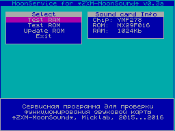 Сервисная программа MoonService v0.3a Новая программа для проверки функционирования карты ZXM-MoonSound.
Эта версия слегка доработанная версия v0.3. Функционал тот же самый, изменения коснулись процесса обновления флеш ПЗУ.
При проверки микросхемы MX29F016 оказалось что время стирания микросхемы чуть больше чем было при стирании микросхемы
AM29F016. В результате операция обновления не проходила. Важное замечание, для правильной работы новой функции
необходимо, чтобы в компьютере был интерфейс SD карты по стандарту Z-Сontroller. Иначе обновить прошивку вы не сможете. Автор: Mick Год выпуска:
2016 Исходные коды:
скачать Файл для платформы ZX
Spectrum: скачать 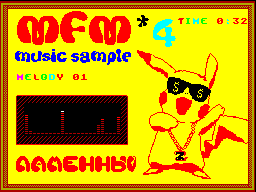 Демо программа MFM Music sample 4. Продолжаем выпускать сборники. В новом сборнике 8 мелодий
с расширением MFM, написанных в редакторе MoonBlaster (платформа MSX), специально для микросхемы YMF278.
Переключение мелодий происходит по клавише Space или автоматически по окончанию
мелодии. Автор: Mick Год выпуска:
2016 Исходные коды:
скачать Файл для платформы ZX
Spectrum: скачать 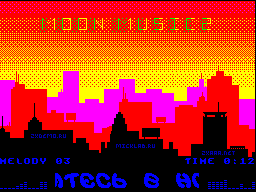 Демо программа Moon Music 2. Новый музыкальный сборник в поддержку данной звуковой карты.
В сборнике 14 мелодий с расширением MWM, написанных в редакторе MoonBlaster (платформа MSX),
специально для микросхемы YMF278. Переключение мелодий проиходит по клавише Space.
Кроме того стоит отметить что музыка в этом сборнике 60Гц, так что на некоторых реалах возможно и не пойдет.
На этот случай прикладывается эмуляторный (Unreal) вариант сборника. Авторы: Mick и AAA Год выпуска:
2016 Исходные коды:
скачать Файл для платформы ZX
Spectrum: скачать Файл для эмулятора Unreal:
скачать 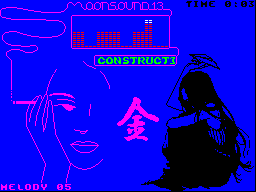 Демо программа Moonsound 13. Новый музыкальный сборник в поддержку данной звуковой карты.
В сборнике 19 в целом приятных мелодий с расширением MWM, написанных в редакторе MoonBlaster (платформа MSX),
специально для микросхемы YMF278. Переключение мелодий происходит по клавише Space. Авторы: Mick и AAA Год выпуска:
2016 Исходные коды:
скачать Файл для платформы ZX
Spectrum: скачать 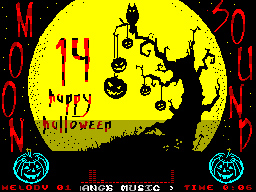 Демо программа Moonsound 14. Новый музыкальный сборник в поддержку данной звуковой карты.
В сборнике 12 весьма своебразных мелодий с расширением MWM, написанных в редакторе MoonBlaster (платформа MSX),
специально для микросхемы YMF278. Переключение мелодий происходит по клавише Space. Авторы: Mick Автор музыки: Near Dark Год выпуска:
2016 Исходные коды:
скачать Файл для платформы ZX
Spectrum: скачать
Henrik Gilvad - за создание карты Moonsound для платформы MSX |
{kind=link}
{kind=link}
{kind=link}
{kind=link}
|
Mick Laboratory 2010 - |